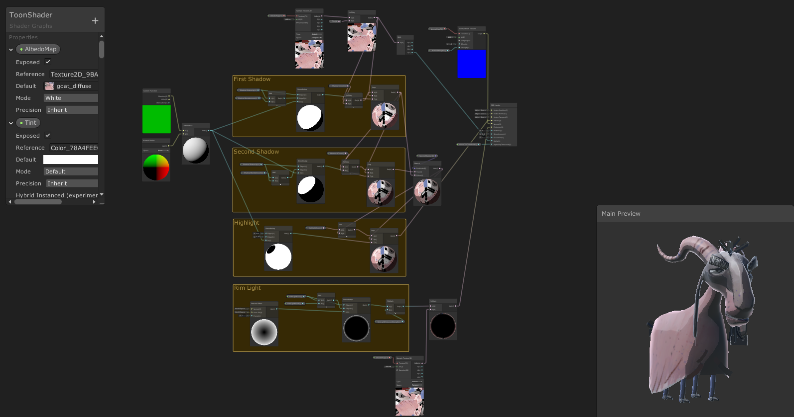
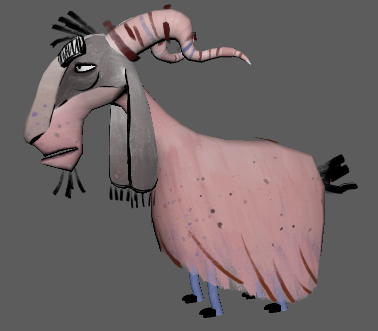
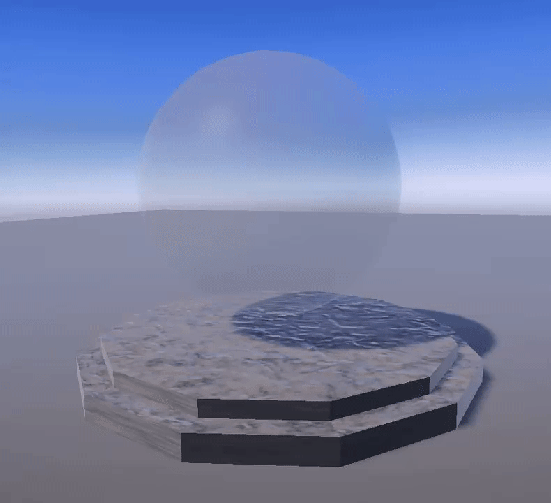
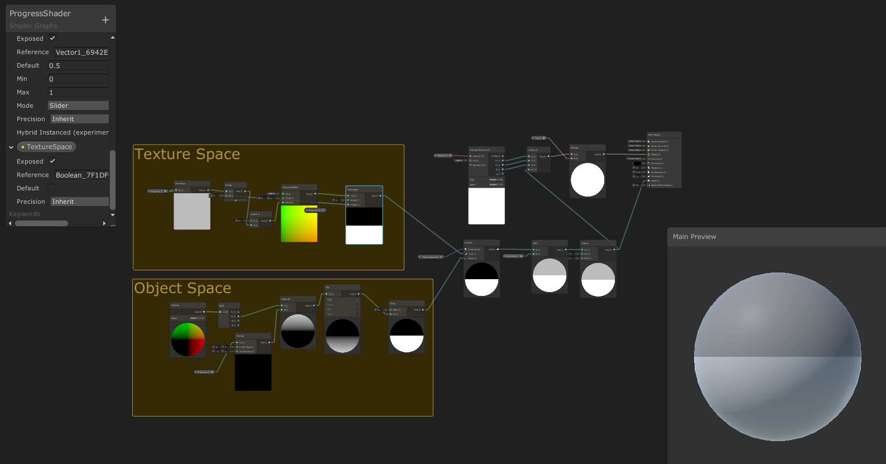
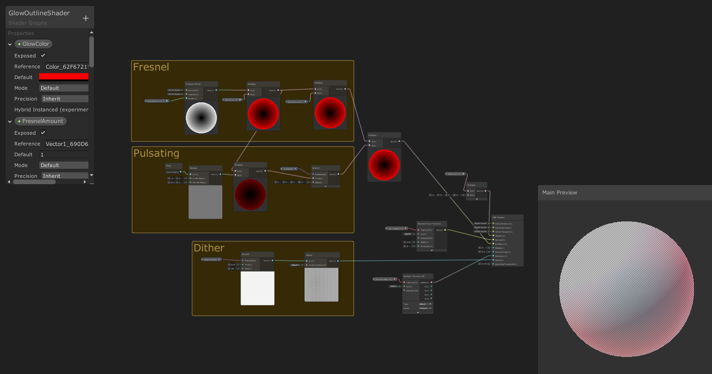
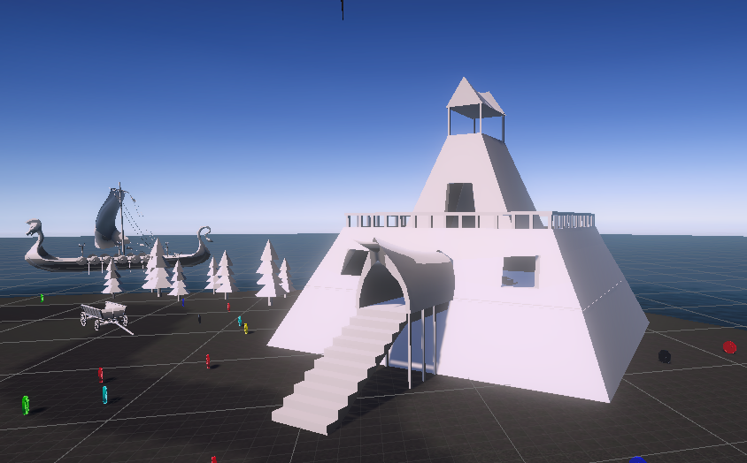
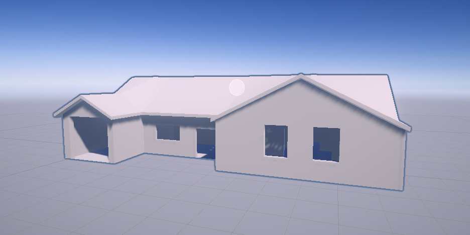
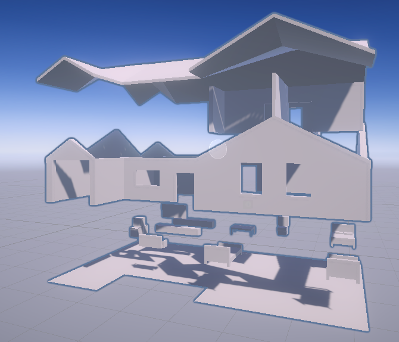

That Damn Goat
In May - December 2020 I worked as a Technical Artist on a MAGIC Spell Studios original game titled That Damn Goat. During that time the game was in prototyping development. My main responsibilities included designing and developing shaders and player UI systems, communicating with artists to optimally implement in-game assets such as characters and objects, and collaborating with audio producers to incorporate in-game sounds using Wwise.

One of my tasks was developing the main shader for in-game characters to help achieve the desired look in Unity. I created a shader with customizable fields to easily change values on the fly. Here is an example of the shader on one of the assets created by the team's 3D character artist


textured goat model without shader
Another shader I worked on was one with the goal of indicating progress from a scale of 0%-100%. We wanted to test out a building mechanic and telegraph progess to the player, but save time and not have to worry about any complex animations

I also created a shader for in-game objects to be more telegraphed to players. The shader also utilizes Unity's rendering pipeline to appear dithered behind other obejcts


Another area I assisted with in the project is prototype level design. I created multiple levels for testing out mechanics and exploring the game's visual feel. The levels are largely made with ProBuilder.

